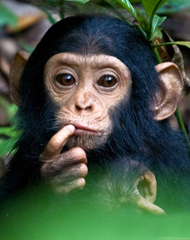
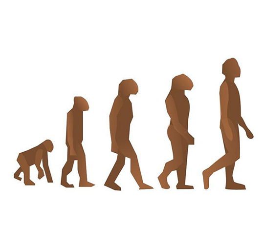
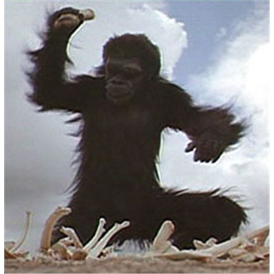

Introduction
Chimpanzees, sometimes colloquially chimp, are two extant hominid species of apes in the genus Pan. The Congo River divides the native habitats of the two species:
Common chimpanzee, Pan troglodytes (West and Central Africa)
Bonobo, Pan paniscus (forests of the Democratic Republic of the Congo)
Chimpanzees are members of the Hominidae family, along with gorillas, humans, and orangutans. Chimpanzees split from the human branch of the family about four to six million years ago. Chimpanzees are the closest living relatives to humans, being members of the Hominini tribe (along with extinct species of Hominina subtribe). Chimpanzees are the only known members of the Panina subtribe. The two Pan species split only about one million years ago.

Evolutionary Relationship
The genus Pan is part of the subfamily Homininae, to which humans also belong. These two species are the closest living evolutionary relatives to humans, sharing a common ancestor with humans about four to six million years ago. Research by Mary-Claire King in 1973 found 99% identical DNA between human beings and chimpanzees, although research since has modified that finding to about 94% commonality, with some of the difference occurring in noncoding DNA. P. troglodytes and P. paniscus have been proposed to belong with H. sapiens in the genus Homo, rather than in Pan; e.g., by J. Diamond in his book, wherein he refers to man as The Third Chimpanzee. Among the arguments in favor of this reclassification is that other species have been reclassified to belong to the same genus because of less genetic similarity than that between humans and chimpanzees.


Portrayals In Science Fiction
The rare depictions of chimpanzees as individuals rather than stock characters, and as central rather than incidental to the plot are generally found in works of science fiction. Robert A. Heinlein's short story "Jerry Was a Man" (1947) centers on a genetically enhanced chimpanzee suing for better treatment. The 1972 film Conquest of the Planet of the Apes, the third sequel of Planet of the Apes, portrays a futuristic revolt of enslaved apes led by the only talking chimpanzee, Caesar, against their human masters. This concept was revisited in the 2011 film Rise of the Planet of the Apes, again with a chimpanzee protagonist named Caesar. Another short story, "The Pope of the Chimps" by Robert Silverberg, set in the present day, shows the development of the first signs of religiosity in a group of chimpanzees, much to the surprise of the humans observing them. David Brin's Uplift novels present a future in which humans have "uplifted" chimpanzees (and certain other species) with human-level sapience.
This page was last modified on 16 October 2013 at 16:20.
Text is available under the Creative Commons Attribution-ShareAlike License; additional terms may apply. By using this site, you agree to the Terms of Use and Privacy Policy.
Wikipedia® is a registered trademark of the Wikimedia Foundation, Inc., a non-profit organization.